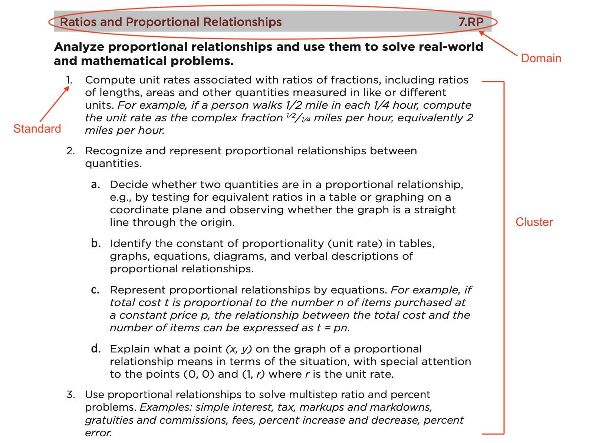
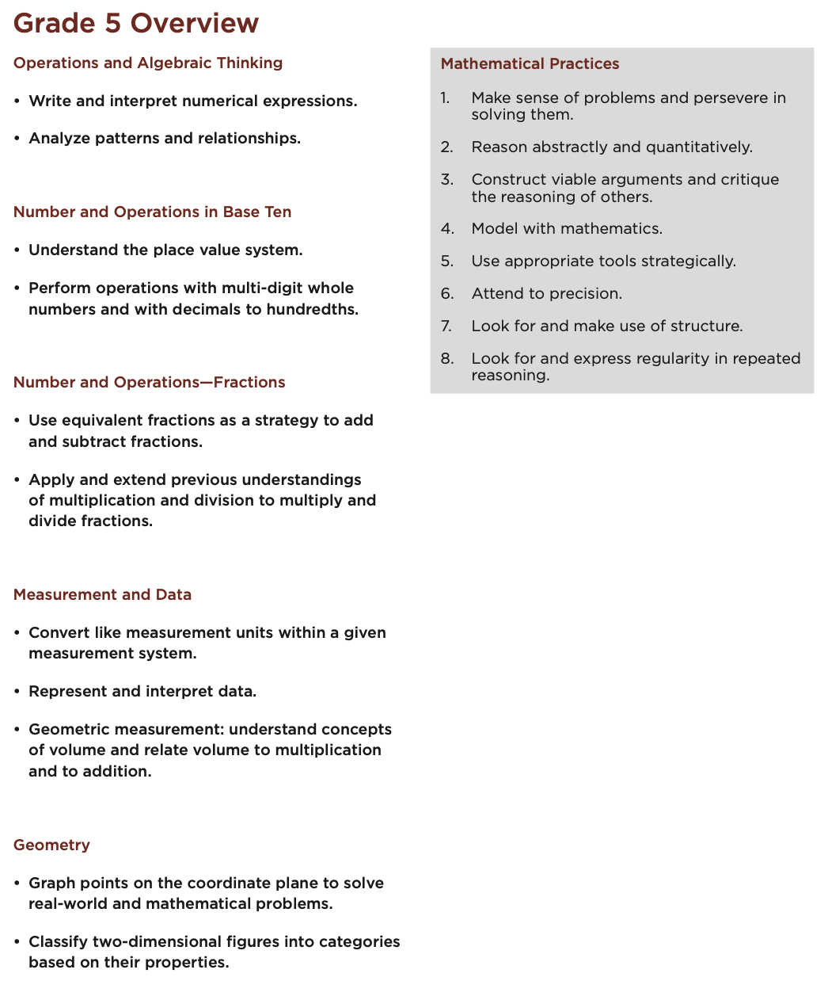
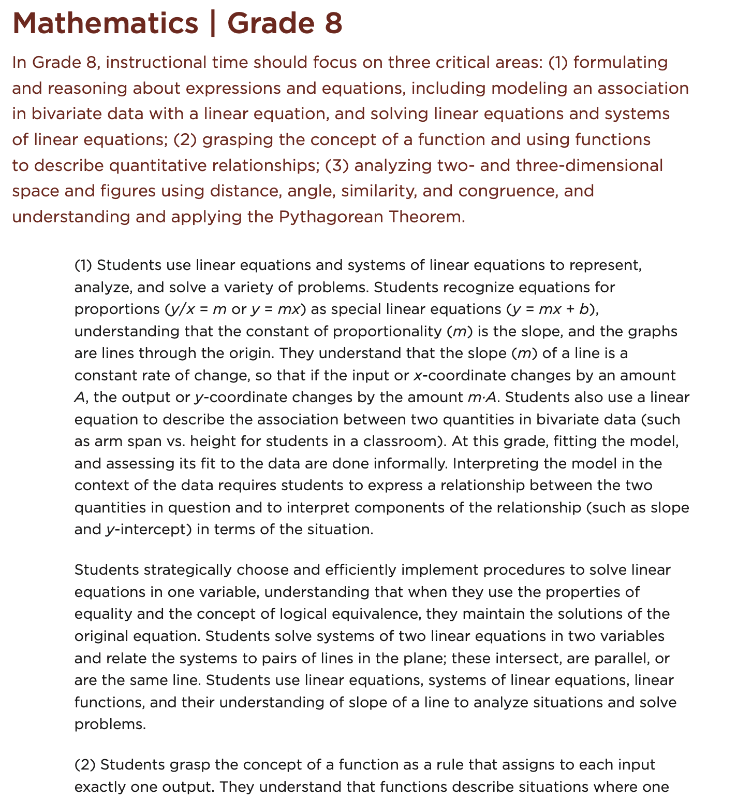

Section1.2Common Core State Standards for Mathematics
The Common Core State Standards for Mathematics (NGACBP and CCSSO, 2010) are broken into two areas. When most people think of mathematics standards, the first things that come to mind are usually standards related to what mathematics will be taught. We refer to these as the Standards for Mathematical Content or more simply, the Content Standards. Since this is the most common expectation, in this section, we will discuss it first. However, the other equally-important part of the CCSS are the Standards for Mathematical Practice that lay out the expectations for "habits of mind" that we need students to have in order to do mathematics. We will adress these Math Practices in the next section.
Subsection1.2.1CCSS: Content Standards
The Content Standards are broken down by grade level for the K-8 grades, but then are arranged by content areas once we get to high school. The standards are organized into domains that progress over several grades so that it is easier to see learning trajectories and expectations as students move through the curriculum. For each grade in the K-8 band, the grade begins with generally 2 to 4 focal points to show the broader goals for that particular grade. Since at the high school level, students in various grades may be taking different mathematics classes than their counterparts, standards are presented by conceptual theme (Number and Quantity, Algebra, Functions, Modeling, Geometry, Statistics and Probability).
The Content Standards are more specific and define what students should understand and be able to do and thus are the most refined categorization. Since many of these standards are linked, the standards are then organized into Clusters which are groups of related standards. Domains are then larger groups that progress across grades (see Figure 1.2.1).

Figure1.2.1.Organization of CCSS
Within the K-8 band, the standards for that grade begin with an overview of what is expected. This gives the teacher a broad view of the goals for that grade level (see Figure 1.2.2).

Figure1.2.2.Grade Level Overview
You will notice in the Grade 5 Overview, Operations and Algebraic Thinking appear first. For many people, "algebra" means manipulating letters and symbols, but the CCSS have algebraic thinking as a goal beginning in kindergarten. Algebra is far more than the maipulating of symbols and the movement toward abstraction begins early. Algebraic thinking involves noticing, expressing, and analyzing patterns and these are activities where young learners excel until our curriculum often suppresses it by focusing on memorization and procedural fluency. We will discuss the nature of algebra in greater detail later in the text, but for now, it is important to realize that the foundation for what we want students to be able to understand later in formal algebra courses begins with patterning. For an interesting read on how algebra develops in young learners, consider, Algebra in the Early Grades by Kaput, Carraher, and Blanton (2008).
As the CCSS get to Grade 8, there is a more deliberate move toward symbolization. Here the expectations include things like "Analyze and solve linear equations and pairs of simultaneous linear equations", "Define, evaluate, and compare functions", and "Use functions to model relationships between quantities". This does not mean that symbolic forms are not expected in the earlier grades, but rather that in Grade 8, formalization of these concepts should be a focus of the curriculum. For this reason, the CCSS also provides a summary of focal points at the beginning of each grade level (K-8). An example of this can be seen in Figure 1.2.3.

Figure1.2.3.Grade Level Overview
The high school standards, as stated earlier, are organized into the conceptual themes of Number and Quantity, Algebra, Functions, Modeling, Geometry, Statistics and Probability. For the purpose of this text, we will focus mainly on Algebra, but keep in mind that it is difficult to discuss algebraic ideas without the use of Functions and Modeling as these applications drive much of our need for algebraic structure. Like the K-8 grade-level standards, the high school standards also give a summary of focal points for each theme so that the teacher has an idea of how the content should be approached when teaching it.
Subsection1.2.2CCSS: Standards for Mathematical Practice
While the mathematical content of what should be taught at various grade levels is often the major focus of the curriculum or standards, there is a much broader view that is equally important when it comes to developing mathematical thinking. It is not enough to "know" content. If we realize that mathematics is a creative endeavor, we must also address the habits of mind that need to be developed for mathematical thinking. For this reason, the Common Core State Standards was intentionally partitioned into two parts in order to make this point clear. In fact, when you read through the CCSS, you will notice that these habits or mind are actually listed first before the Content Standards are addressed. This drives home the importance of these mental processes that are so essential for preparing students to be good mathematical thinkers (or overall critical thinkers for that matter). We have described the Content Standards, but now we need to address the Standards for Mathematical Practice (see Figure 1.2.4). These standards describe the 8 basic habits of mind that we need students to possess in order to use the mathematics content knowledge effectively and creatively. In the list below, you can see greater detail for what is intended by each practice by clicking on the "hint" link below the listed practice.
Make sense of problems and persevere in solving them. Hint.
"Mathematically proficient students start by explaining to themselves the meaning of a problem and looking for entry points to its solution. They analyze givens, constraints, relationships, and goals. They make conjectures about the form and meaning of the solution and plan a solution pathway rather than simply jumping into a solution attempt. They consider analogous problems, and try special cases and simpler forms of the original problem in order to gain insight into its solution. They monitor and evaluate their progress and change course if necessary. Older students might, depending on the context of the problem, transform algebraic expressions or change the viewing window on their graphing calculator to get the information they need. Mathematically proficient students can explain correspondences between equations, verbal descriptions, tables, and graphs or draw diagrams of important features and relationships, graph data, and search for regularity or trends. Younger students might rely on using concrete objects or pictures to help conceptualize and solve a problem. Mathematically proficient students check their answers to problems using a different method, and they continually ask themselves, “Does this make sense?” They can understand the approaches of others to solving complex problems and identify correspondences between different approaches." (NGACBP and CCSSO, 2010, p. 6)
Reason abstractly and quantitatively. Hint.
"Mathematically proficient students make sense of quantities and their relationships in problem situations. They bring two complementary abilities to bear on problems involving quantitative relationships: the ability to decontextualize—to abstract a given situation and represent it symbolically and manipulate the representing symbols as if they have a life of their own, without necessarily attending to their referents—and the ability to contextualize, to pause as needed during the manipulation process in order to probe into the referents for the symbols involved. Quantitative reasoning entails habits of creating a coherent representation of the problem at hand; considering the units involved; attending to the meaning of quantities, not just how to compute them; and knowing and flexibly using different properties of operations and objects." (NGACBP and CCSSO, 2010, p. 6)
Construct viable arguments and critique the reasoning of others. Hint.
"Mathematically proficient students understand and use stated assumptions, definitions, and previously established results in constructing arguments. They make conjectures and build a logical progression of statements to explore the truth of their conjectures. They are able to analyze situations by breaking them into cases, and can recognize and use counterexamples. They justify their conclusions, communicate them to others, and respond to the arguments of others. They reason inductively about data, making plausible arguments that take into account the context from which the data arose. Mathematically proficient students are also able to compare the effectiveness of two plausible arguments, distinguish correct logic or reasoning from that which is flawed, and—if there is a flaw in an argument—explain what it is. Elementary students can construct arguments using concrete referents such as objects, drawings, diagrams, and actions. Such arguments can make sense and be correct, even though they are not generalized or made formal until later grades. Later, students learn to determine domains to which an argument applies. Students at all grades can listen or read the arguments of others, decide whether they make sense, and ask useful questions to clarify or improve the arguments." (NGACBP and CCSSO, 2010, p. 6-7)
Model with mathematics. Hint.
"Mathematically proficient students can apply the mathematics they know to solve problems arising in everyday life, society, and the workplace. In early grades, this might be as simple as writing an addition equation to describe a situation. In middle grades, a student might apply proportional reasoning to plan a school event or analyze a problem in the community. By high school, a student might use geometry to solve a design problem or use a function to describe how one quantity of interest depends on another. Mathematically proficient students who can apply what they know are comfortable making assumptions and approximations to simplify a complicated situation, realizing that these may need revision later. They are able to identify important quantities in a practical situation and map their relationships using such tools as diagrams, two-way tables, graphs, flowcharts and formulas. They can analyze those relationships mathematically to draw conclusions. They routinely interpret their mathematical results in the context of the situation and reflect on whether the results make sense, possibly improving the model if it has not served its purpose." (NGACBP and CCSSO, 2010, p. 7)
Use appropriate tools strategically. Hint.
"Mathematically proficient students consider the available tools when solving a mathematical problem. These tools might include pencil and paper, concrete models, a ruler, a protractor, a calculator, a spreadsheet, a computer algebra system, a statistical package, or dynamic geometry software. Proficient students are sufficiently familiar with tools appropriate for their grade or course to make sound decisions about when each of these tools might be helpful, recognizing both the insight to be gained and their limitations. For example, mathematically proficient high school students analyze graphs of functions and solutions generated using a graphing calculator. They detect possible errors by strategically using estimation and other mathematical knowledge. When making mathematical models, they know that technology can enable them to visualize the results of varying assumptions, explore consequences, and compare predictions with data. Mathematically proficient students at various grade levels are able to identify relevant external mathematical resources, such as digital content located on a website, and use them to pose or solve problems. They are able to use technological tools to explore and deepen their understanding of concepts." (NGACBP and CCSSO, 2010, p. 7)
Attend to precision. Hint.
"Mathematically proficient students try to communicate precisely to others. They try to use clear definitions in discussion with others and in their own reasoning. They state the meaning of the symbols they choose, including using the equal sign consistently and appropriately. They are careful about specifying units of measure, and labeling axes to clarify the correspondence with quantities in a problem. They calculate accurately and efficiently, express numerical answers with a degree of precision appropriate for the problem context. In the elementary grades, students give carefully formulated explanations to each other. By the time they reach high school they have learned to examine claims and make explicit use of definitions." (NGACBP and CCSSO, 2010, p. 7)
Look for and make use of structure. Hint.
"Mathematically proficient students look closely to discern a pattern or structure. Young students, for example, might notice that three and seven more is the same amount as seven and three more, or they may sort a collection of shapes according to how many sides the shapes have. Later, students will see \(7 \times 8\) equals the well remembered \(7 \times 5 +7 \times 3\text{,}\) in preparation for learning about the distributive property. In the expression \(x^2+9x+14\text{,}\) older students can see the 14 as \(2 \times 7\) and the 9 as \(2+7\text{.}\) They recognize the significance of an existing line in a geometric figure and can use the strategy of drawing an auxiliary line for solving problems. They also can step back for an overview and shift perspective. They can see complicated things, such as some algebraic expressions, as single objects or as being composed of several objects. For example, they can see \(5-3\left(x-y\right)^2\) as 5 minus a positive number times a square and use that to realize that its value cannot be more than 5 for any real numbers x and y." (NGACBP and CCSSO, 2010, p. 8)
Look for and express regularity in repeated reasoning. Hint.
"Mathematically proficient students notice if calculations are repeated, and look both for general methods and for shortcuts. Upper elementary students might notice when dividing 25 by 11 that they are repeating the same calculations over and over again, and conclude they have a repeating decimal. By paying attention to the calculation of slope as they repeatedly check whether points are on the line through (1, 2) with slope 3, middle school students might abstract the equation \((y-2)/(x-1) = 3\text{.}\) Noticing the regularity in the way terms cancel when expanding \((x-1)(x+1)\text{,}\)\((x-1)(x^2 + x + 1)\text{,}\) and \((x-1)(x^3 + x^2 + x + 1)\) might lead them to the general formula for the sum of a geometric series. As they work to solve a problem, mathematically proficient students maintain oversight of the process, while attending to the details. They continually evaluate the reasonableness of their intermediate results." (NGACBP and CCSSO, 2010, p. 8)
One of the challenges teachers face is helping students connect the Content Standards using the Standards for Mathematical Practice. How do we go about eliciting student thinking about mathematics and engaging them in productive struggle where they can gain experience using these 8 practices? In the next subsection, we will take a look at some ways to accomplish this by trying to identify elements of these standards within our own mathematical exploration. Throughtout this text, we will also watch video cases and read written vignettes where actual secondary students are grappling with both mathematical content and practices. We will analyze these situations and build our own instincts as teachers to better engage our future students in mathematical development.
Subsection1.2.3Applying the Common Core State Standards
In this section, we will focus on identifying and applying the Common Core State Standards within mathematical tasks and classroom cases. To begin, we can start by examining a task that involves both mathematical content and mathematical practices with a goal of identifying aspects of the CCSS in relation to our reflections on what we do and why we do it. As a teacher, it is essential that we continually assess and evaluate our students’ thinking. This allows us to make adjustments in our instruction to meet the needs of young learners. Novice teachers can practice this process by participating in metacognitive activities. Metacognition, often described as "thinking about your own thinking," is the awareness and understanding of one’s own thought processes. It’s a higher-level cognitive skill that allows individuals to plan, monitor, and evaluate their own learning and problem-solving. Consider the following task.
Activity1.2.1.Roadkill.
Consider a problem in many rural areas\(-\)roadkill. As you drive along the highway, I am sure you have noticed deer carcasses in the ditch. Deer collisions are a common cause of insurance claims and vehicles have evolved to try and reduce the number of deer incidents. Some cars have sensors that alert the driver to a potential object in the road and can even engage the brakes. So how does the technology make decisions on how to brake if an object is detected? It is not practical to slam on the brakes if the object is still a fair distance away. However, if the object is closer, the vehicle may need to decelerate more quickly. How fast can a vehicle decelerate safely without harming the occupants? These questions can be answered by a series of calculations that relate distance, rate, and time. In this activity, you will explore a simple model for dealing with this question. Consider the problem posed in the video below.
Figure1.2.5.Roadkill Activity
(a)
Before actually tackling the Roadkill task, in your group, develop a strategy for how you will approach the task. Don’t begin trying to solve it yet, just develop a strategy and summarize it on your whiteboard to share with others.
(b)
Share your strategy for attacking the problem and listen to others’ approaches. On your whiteboards, summarize your thought on the following questions. What are some pros and cons of each approach? How are the approaches the same? How are they different?
(c)
Now carry out your plan. Remember, I will place the deer in front of your Rover at an unknown location and you will have to then enter a time into the Rover to try and get as close to the deer as possible without hitting it. The team with the closest approach will get a prize.
In his book, Building Thinking Classrooms in Mathematics (2020), Peter Liljedahl discusses types of tasks and their effectiveness for engaging students in thinking as opposed to mimicking. He refers this type of task as a "highly engaging thinking task". These are tasks that are so engaging that people cannot resist thinking. They have broad appeal and can be used across a wide range of grades (e.g. upper elementary, middle, high school, Calculus and beyond). Now let’s take a look at what you experienced in solving the Roadkill problem and relate it to the CCSS and Liljedahl’s ideas of tasks.
Activity1.2.2.Roadkill: Revisited.
In class, we used the TI-Innovator Rover to avoid hitting a deer and developed strategies using an inquiry approach. This task (as I am sure you have discovered) involves mathematics. For this reflection, read through the Common Core State Standards (which also happen to be the Michigan Standards). As stated before, the Standards have two components (Standards for Mathematical Content and the Standards for Mathematical Practice). For this assignment, read through the Grades 5-8 and the High School Standards.
(a)
Identify items found in the middle and high school portion (Grades 5-8 and the High School portion) for the Standards for Mathematical Content of the Common Core State Standards for Mathematics that are directly related to this task. As you list the standards, give a brief description of each and explain how your experience with the Rover might help you teach the given standard.
(b)
Are the content standards you listed in part (a) dependent on the approach a group may have taken?
(c)
Are the content standards you listed in part (a) related to each other in any way? Describe any connections you see.
(d)
As you think about this task, how might it be used in a middle grades (grades 5, 6, 7, or 8) classroom? What tools would you expect students in these grades to use to tackle this task?
(e)
As you think about this task, how might it be used in a lower level high school (Algebra, Geometry, or Integrated) classroom? What tools would you expect students in these classes to use to tackle this task?
(f)
As we have seen, there are many different mathematical concepts that could potentially be identified by students when a teacher enters a whole class discussion where students share their approaches. What would you do if a student (or group) suggests an approach that leads to a mathematical concept that you had not planned to adress with your lesson? Discuss ideas in your groups and be ready to share with the class.
(g)
Identify items found in the Standards for Mathematical Practice that are directly related to these experiences. As you list the standards, give a brief description of each and explain how your experience with the Rover might help you address the given standards when working with students.
Liljedahl categorizes highly engaging thinking tasks into the three following types:
Low-Floor Task : Task with a threshold that allows any and all learners to find a point of entry, or access, and then engage within their level of comfort.
High-Ceiling Task : Tasks that have ambiguity and/or room for extensions such that students can engage with the evolving complexity of the task.
Open-Middle Task : A problem structure where a task has a single final correct answer, but in which there are multiple possible correct ways to approach and solve the problem. (Liljedahl, 2020)
(h)
How would you categorize the Roadkill Activity? Give some reasoning for your categorization. Do you think it could be considered for more than one type?
(i)
While this activity uses robotic Rovers to engage students in looking at relationships, you might be tempted to say, "But when I go to teach, I won’t likely have Rovers...How can I use this activity? I knew this class would be a waste." Well, I like to think that We All Use Math Every Day! When I walk through a toy aisle of a store, I am always thinking, "How can I use that toy to teach math?". To get you thinking, you have in front of you a toy car that can be pulled back to engage a spring so that it moves forward when released. In your groups, devise a plan to teach some of the same mathematical concepts you identified in Roadkill using this cheap car. Summarize your ideas on the whiteboards and be prepared to share with your colleagues.
The Commonn Core State Standards have been a topic of debate by partents and teachers alike. Many parents become frustrated when they struggle to help their children with homework. One example that made its way around the internet was a parent (who claims a degree in engineering) having difficulty helping with subtraction. The curriclum has children use a number line to solve the problem by moving along the number line. The parent expresses frustration since he thinks the children should just line up the digits and use the "standard" algorithm that he was taught (see for a summary). One of the reasons for parental frustration is that many parents simply memorized or mimicked procedures without connecting it to the meaning of the algorithm and therefore the alternative methods being taught do not make sense to them.
Figure1.2.6.Common Core Frustration Explained
What is interesting about the method explained in Figure 1.2.6 is that while angry parents complain about this "new" method, it is actually not "new" at all. This is actually how my grandmother learned it. This method called "counting on" or "cashier’s subtraction" stems from an era where electronic cash registers did not exist and cashiers actually "counted back" a patron’s change. In fact, from a practical sense, people with an understanding of arithmetic do not usually line up digits and subtract. Counting on is a much easier way to mentally compute a difference. Otherwise, people generally pull out their phone and use their calculator app. I once received free frozen yogurt because a cashier could not make change. His cash register locked up and he could not rely on it to tell him how much change to give me. I tried to walk him through counting on, but instead, he simply gave my wife and me free frozen yogurt and locked the door behind us as we left, closing up for the night.
As we work through this course, it is essential that the preservice teacher try to make sense of the Common Core State Standards and always ask the question, "Why do we teach this concept and how can I help students make sense of it?". Reducing mimicking in favor of thinking is the key and as teachers we should always strive for thinking over mere procedural fluency.